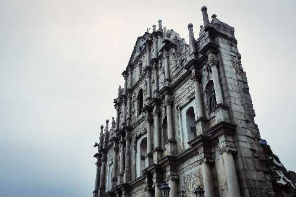

_______________________________________________________________________
“2005年7月15日,在联合国教科文组织(UNESCO)召开的世界遗产委员会第29次会议上,澳门历史城区被成功列为世界遗产,成为中国第31处获此殊荣的景区”(澳门政府旅游局2006)。

澳门历史城区是四百多年来中西文化交融的结晶,区内的建筑遗产星罗棋布,与街道、广场等原始的市区结构相互交织,凸现其特别的风采。澳门历史城区既展现了座落在中国境内的最古老、最完整的欧洲建筑遗产,也保持着典型的中国传统建筑。自16世纪中叶葡萄牙航海家登陆这片中国土地之后,澳门逐渐发展为一个多元文化并存的国际贸易城市,成为欧亚文化交流之典范。
“明末清初,大量天主教传教士以澳门为传教基地,积极从事远东地区的传教工作,并由此创造出中西文化交流的辉煌篇章。这些传教士来自不同的修会,他们为中国带来了西方近代的科学技术及人文艺术,又向西方介绍了中国的文化成就”
西方宗教对澳门的影响几乎随处可见,特别是在历史建筑的名称上,如“CompanyofJesusSquare”(耶稣会纪念广场)、“Cathedral”(大堂/主教座堂))、“St.Augustine’sChurch”(圣奥斯定教堂)、“the ProtestantCemetery”(基督教坟场)、“St.Dominic’sSquare”(板樟堂前地)、“RuinsofSt.Paul’s”(大三巴牌坊)“Dom Pedro V Theatre”(岗顶剧院)等。但这些西式的历史建筑并非孤单矗立,而是共处于中式的传统建筑之中,如妈阁庙、郑家大屋、三街会馆(关帝庙)、哪吒庙等。两种风格迥异的建筑遗产在澳门形成了强烈的对比,使这个弹丸之地的城市成为世界各地众多游客流连忘返的国际旅游胜地。

澳门在过去十年间取得的所有成就中,最令人瞩目的莫过于本文开篇提到的2005年申报世界遗产的成功。随着澳门历史城区成为世遗景点,澳门政府旅游局通过印发宣传小册子、树立公共牌示等各种形式宣传历史城区的景点和历史建筑。因此,对如今的游客来说,阅读这些宣传材料是他们了解澳门文化的一条重要途径。